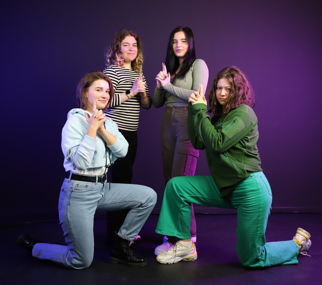
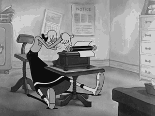

Before forming this team, I didn't know any of the girls, but one thing in particular brought us together: we are all from Eastern Europe. As strange as that sounds, that connects us through the jokes we can make, the cuisines we share and the common words our languages share.
Another thing we have in common is that when we arrived here, we struggled to find accommodation, which is why we decided to work on a student housing project: EINDhouse.
I would say we work together well as a team, we all collaborate and communicate with each other, we come up with ideas and listen to each other.
My name is Ana Maria Popescu and I come from Galati, a city in Romania that borders Moldova and Ukraine. Growing up, I studied linguistics and humanities, but before graduating high school I decided to apply to ICT at Fontys.
I am a first year student at, specializing in Media Design. I hope that one day I can apply this knowledge to become either a teacher, or a UX designer.
My hobbies are mostly related to stimulating my creativity and eye for arts and aestethics, which makes me think I am a good fit for my profile. I love music, films, (contemporary) art, linguistics, trying out new cuisines, and travelling. I aspire to know a little bit about everything, and to use stick those bits together like pieces of a puzzle in order to create something unique, and beautiful.
It is a portfolio where the student documents progress, reflects on learning outcomes, Feedback and teamwork over a period of time.
My PEP's layout is inspired by the Imgur picture grid assignment we had to do on December 5th. I liked the idea because it is a great way to showcase both pictures and text, and I played with it at home trying to try and develop a personal project until I got it right and realized I should try it with my own portfolio.
Because sometimes words sometimes can't describe a person as much as music can, I created a playlist:
I visited these expositions earlier this year and resonated with the artists' point of view when transcribing youth through communist blocks and low saturated tones with unexpected violent splashes of color and sound/ movements, which is why I decided to try and achieve the same while "storytelling" my experience of growth as a student.